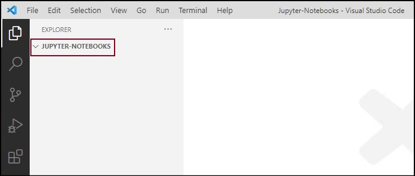
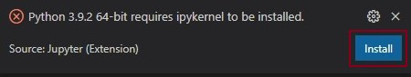
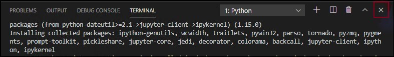
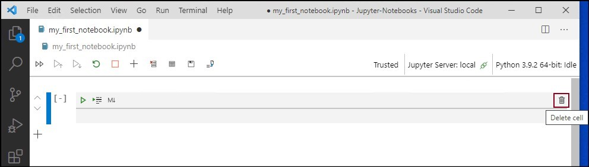
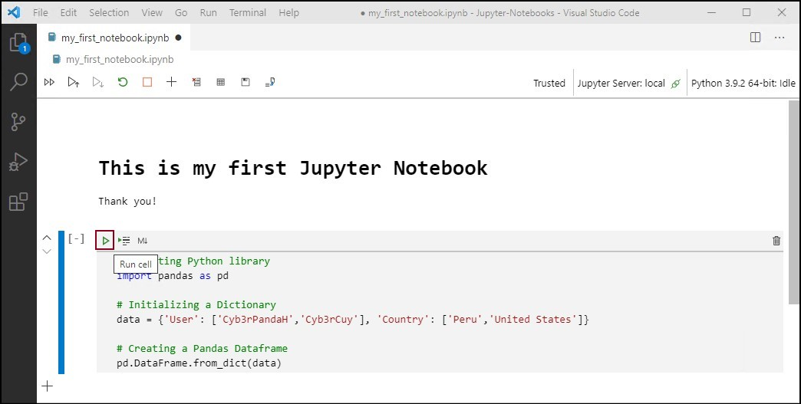

My First Jupyter Notebook on Visual Studio Code (Python kernel)
In this blogpost, I will share the steps that you can follow in order to generate and use a Jupyter Notebook on Visual Studio Code (VSCode). During the development of this blogpost I used a Python kernel in a Windows computer.
Pre-requisites
In order to complete the steps of this blogpost, you need to install the following in your windows computer:
Visual Studio Code: you can find the steps to install it here.Python Extension for Visual Studio Code: you can find the steps to install it here.Python Interpreter: you can find the steps to install it here.
Setting Up a Jupyter Notebook on VSCode
1) Creating a Workspace on VSCode
- The first step of this guide will be to create a folder to store all our Jupyter Notebook projects. For this blog post, I am creating the folder
Jupyter-Notebooksin the following directoryC:\Users\User1\Documents\Cyb3rPandaH.
- Open the VSCode application.
- Go to the File menu and select Open Folder.
- Search for the
Jupyter-Notebooksfolder that was created previously and click onSelect Folder.
- By opening the Jupyter-Notebook folder, it becomes your
workspacewithin Visual Studio Code. We are now ready to create our first Jupyter Notebook file.

2) Creating a Jupyter Notebook
- Click on the
New Fileicon, next to the name of our workspace.
- Type a name for your file using the
ipynbextension and press enter. - By using this extension, we are telling VSCode to process this file as a
Jupyter Notebookfile.
- After hitting the
Enterkey, you will see a message at the bottom left of your screen that saysPython Extension Loading.
- In additon, because this is your first time creating a Jupyter Notebook using VSCode, you will get an additional message that says
Python requires ipykernel to be installed. This message is telling us that we need to install a Kernel. - A kernel is a process that runs interactive code in a particular language such as Python or R and return output to us.
- In this example we are using
Pythonlanguage, therefore you need to install the ipykernel Python kernel for VSCode. Click onInstall.

- VSCode will open a terminal and install the
ipykernelcomponent for you. - Wait for the installation process to complete.
- After the installation process is completed successfully, VSCode will connect your
Jupyter Notebookto theipykernelPython kernel.
- You can close the VSCode terminal window by clicking on the
Close Panelbutton that is located at the top right of the terminal window. - The installation process for the
ipykernelPython kernel will not be required when creating future Jupyter Notebooks because we just installed it in VSCode.

- Awesome!! VSCode has created a
Jupyter Notebook serverlocally in your computer. We now have our first Jupyter Notebook file created with the Python extension loaded and connected to a Python Kernel.
Basic Interaction With Jupyter Notebooks
1) Inserting and Deleting Cells
- You can add a new cell by clicking on the
Insert Cell Bellow➕ (At the bottom left of each cell) button or by hitting the B key one time after selecting a cell.
- You can delete a cell by clicking on the
Delete Cellbutton üóëÔ∏è (At the right of each cell) or by hitting the D key two times after selecting a cell.

2) Switch Cell Content Type
- By default, the content type of a cell is
code. You can change the content type tonarrative textby clicking on theChange to Markdownbutton M⬇️ (At the top left of each cell).
# This is my first Jupyter Notebook
Thank you!
- You can change the content type of a cell back to
codeby clicking on theChange to Codebuttom { } (At the top left of each cell).
3) Running Markdown and Code Cells
- After adding content to a
Markdowncell, you can get the output of this type of cell just by clicking on anywhere outside the cell or by hittingShift + Enterkeys combination (Using the second option will also add a new cell below).
- After adding content to a
codecell, you can get the output of this type of cell just by clicking on theRun Cellbutton ▶️ (At the top left of each cell) or by hittingShift + Enterkeys combination (Using either both options will add a new cell below).
# Importing Python library
import pandas as pd
# Initializing a Dictionary
data = {'User': ['Cyb3rPandaH','Cyb3rCuy'], 'Country': ['Peru','United Sttes']}
# Creating a Pandas Dataframe
pd.DataFrame.from_dict(data)

Importing Non-Installed Python Libraries
When trying to import a non-installed Python library, we will get an error similar to the one showed in the image below.
# Importing Python library
import requests

You can find all the steps required to install a Python library using pip in VSCode here. After completing these steps, you can try and run the code within the cell again.
References
- https://code.visualstudio.com/docs/python/jupyter-support
- https://blog.openthreatresearch.com/installing_vscode_windows
- https://blog.openthreatresearch.com/installing_python_extension_vscode
- https://blog.openthreatresearch.com/installing_python_interpreter
- https://blog.openthreatresearch.com/installing_python_library_vscode
Subscribe to Open Threat Research Blog
Get the latest posts delivered right to your inbox